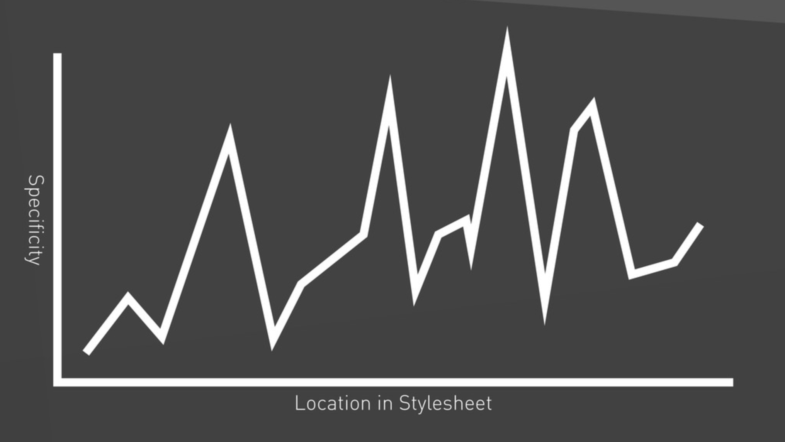

ITCSS

L'architecture CSS des heros
Sommaire
- TRAVERS DE L'ARCHITECTURE "TRADITIONNELLE"
- AVANTAGES DE L’ARCHITECTURE ITCSS
- ITCSS EN PRATIQUE
TRAVERS DE L'ARCHITECTURE "TRADITIONNELLE"
Hiérarchie du code
- Uniformisation des styles navigateurs (Reset/Normalize)
- Styles de page (html/body)
-
Composants
- En-tête
- Navigation
- Contenu principal
- ...
- Hacks (Styles réservés à IE)
- Fonctionnalités de la v2
Gestion spécificité

Surcharge
.gb_D {
...
color: #000;
cursor: pointer;
text-decoration: none;
}
#gb a.gb_D {
color: red;
cursor: default;
}
#gb#gb a.gb_D {
color: #000;
cursor: pointer;
}
AVANTAGES DE L’ARCHITECTURE ITCSS
Objectifs
- Contrôler l’évolution du niveau de spécificité
- Faciliter la compréhension du code
- Simplifier la contribution
Graphes spécificité

Triangle Inversé

ITCSS EN PRATIQUE
Organisation
1 fichier = 1 ensemble de styles
| styles.scss |
+""-components
| | _components.button.scss
| | … |
+""-elements
| | _elements.focus.scss
| | … |
+""-generics
| | _generics.box-sizing.scss
| | … |
+""-objects
| | _objects.layout.scss
| | … |
\""-utilities
| _utilities.visually-hidden.scss
BEMIT
BEM
.block__element--modifier {...}
.o-media__img {...}
.c-panel__body--modifier {...}
Espaces de nom
- Thème (.t-)
- Cadre d’application (.s-)
- Objet (.o-)
- Composant (.c-)
- Hack (._)
- État (.is- / .has-)
- Style utilitaire (.u-)
- Comportement JavaScript (.js-)
- Test fonctionnel (.qa-)
Suffixes responsive
css
.nom-classe@from-palier-ciblé
class="u-br@from-lg"